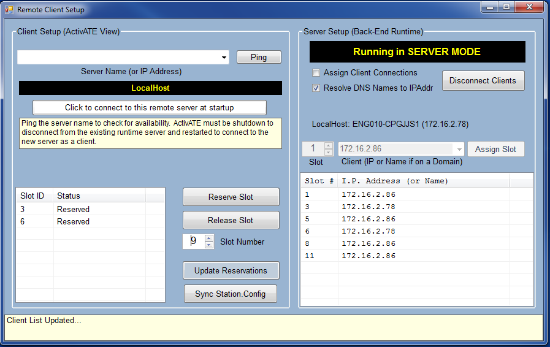

Initially, a user's computer acts as a server and it sees the server-side of the remoting setup. The server has the ability to assign and release slots to each client.

Checking "Assign Client Connections" gives the server the ability to assign available slots to all clients connected to the server. Note: the clients cannot reserve slots on their side if this is checked.
Checking "Resolve DNS Names to IPAddr" displays all client names as IP addresses.
The Disconnect Clients button sends a message to each client, telling them that the server has disconnected from them. This disconnection doesn't occur until the client restarts ActivATE, however.
The client setup side of this page allows for servers to reserve and release desired slots. The status shows if a slot is already reserved. If the slot is reserved by a client, it is not visible to the server. The value in the Slot Number box selects which slot is reserved/released.
If changes in reservations in slots aren't being displayed to the user, the user should click on the "Update Reservations" button to update the displayed reservations.
Main Toolbar Remote Client Setup Client Side Running Tests Disconnecting
Astronics Test Systems
Last updated on 1/14/15 M. Buccat